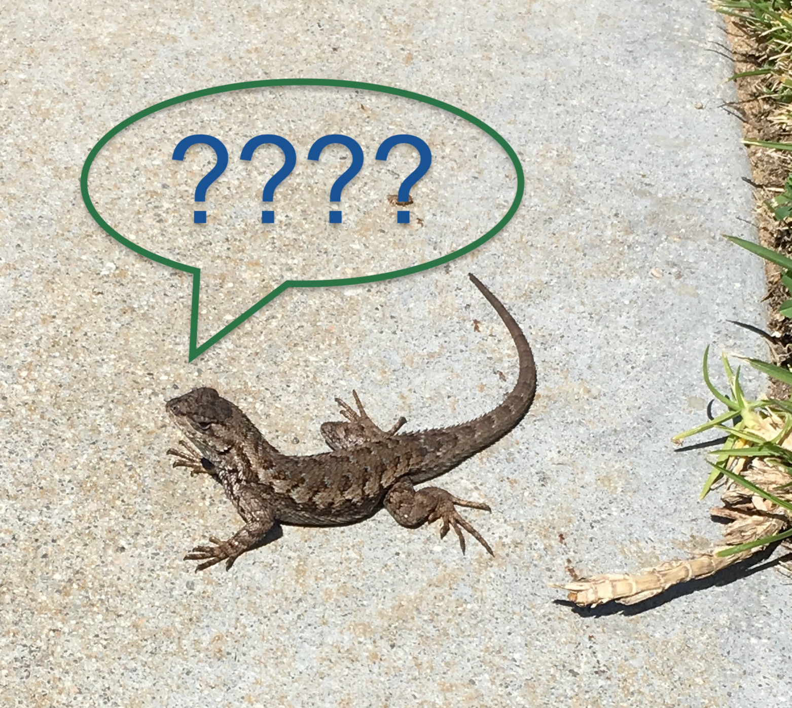
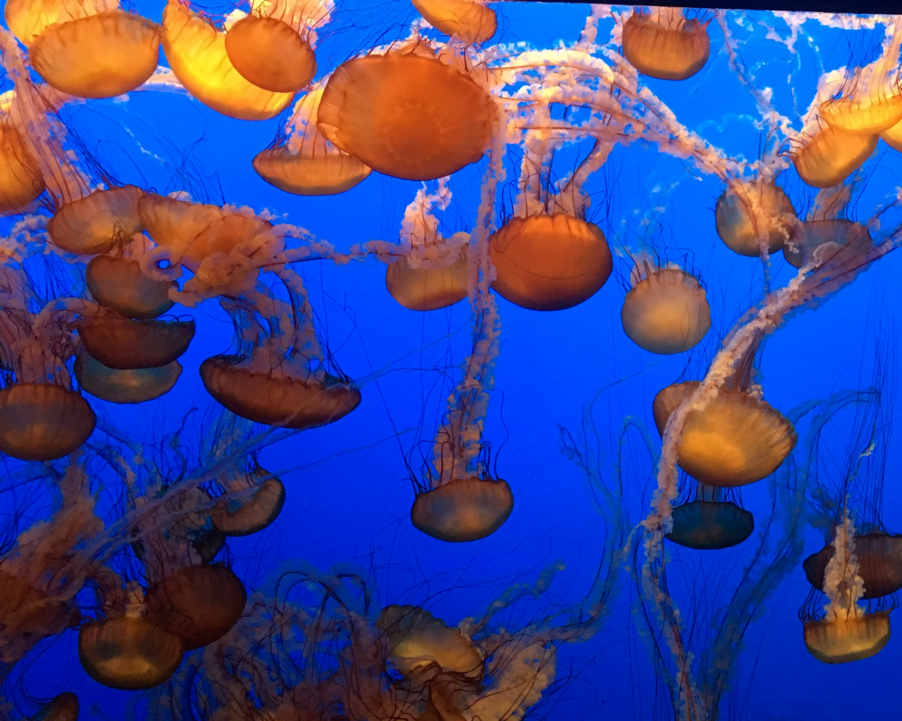

Lab 5: More HTML
Subject of this Lab
 ← Mint the Horse
← Mint the Horse
In this lab we learned how to link to websites and other HTML documents stored in different places within the hierarchy. Part of this was creating a link within an image by wrapping an image tag within a hypertext reference (href) tag. We also learned to properly test our code before uploading it to GitHub making sure all images and links appear and work.
Difficulties Faced
 ← Lizards and Flexible ThinkingLike a lizard, I was able to solve my problems using flexible thinking, trying methods I had not used before. My main issue was with linking to my cst251/index.html site, at first I thought my link wasn't working because I had referenced the wrong path but when that didn't work I decided to try something different. I went to "view in browser" and inspected the link being produced when I noticed a quotation mark had been added at the end. I deleted and retyped the line of code exactly the same way as before and the issue went away. I still don't know what caused the quotation to be added.
Our Results
 ← Jellyfish are Like ComputersThis lab produced a webpage with functioning links, including several linked images, and taught us the importance of testing our code before uploading it to GitHub. Because I properly tested my code I know that my links all work and that my images appear how I want them to on the page.